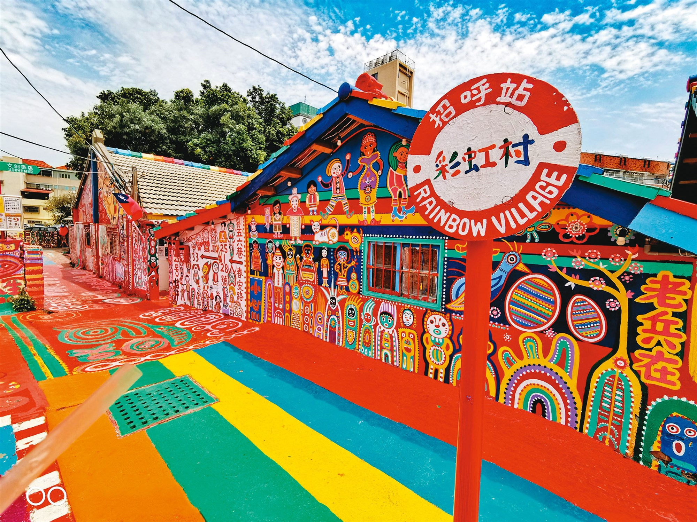

孤獨老兵的素人畫筆，震驚國際的色彩童話世界

彩虹眷村位於台中市南屯區春安路，原本是一處面臨拆遷命運的老舊眷村。自 2008 年起，人稱「彩虹爺爺」的退伍老兵黃永阜先生，因突發奇想拿起了畫筆，開始在自家的牆壁、地面、窗戶上塗鴉。他用充滿童趣與極具張力的繽紛色彩，勾勒出人物、動物與充滿祈福字樣的圖案。這片絢麗的色彩奇蹟不僅成功讓老眷村得以保留，更被國際知名旅遊指南《孤獨星球》（Lonely Planet）評選為「全球值得探訪的秘密景點」之一，成為台中最閃耀的文化地標。
村內的一磚一瓦都佈滿了純真、幽默的素人藝術。從知名藝人、可愛小貓小狗，到寫著「出入平安」、「身體健康」等充滿台灣在地人情味的祈福語。充滿強烈對比的高彩度繪畫，讓這裡每個角落都是網美拍照的絕佳背景。
在這裡，遊客不僅能欣賞現代藝術，更能觸摸到台灣早期的特殊「眷村」歷史。透過彩虹爺爺的畫筆，原本灰暗潮濕的窄小巷弄注入了無盡的生命力，用另一種溫暖且繽紛的方式，將老一代的記憶保存了下來。
眷村內設有許多充滿繽紛圖騰的文創商品小店，販售特製的彩虹明信片、雨傘與帆布包。現場還可以蓋印專屬的彩虹眷村紀念章，將彩虹爺爺所要傳遞的快樂與祝福，一起打包帶回家。